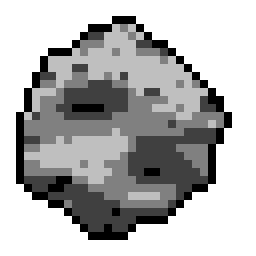

About
History
The Solar System formed about 4.5 billion years ago from a dense cloud of interstellar gas and dust. The cloud collapsed, possibly due to the shockwave of a nearby exploding star, called a "supernova" When this dust cloud collapsed, it formed a solar nebula - a spinning, swirling disk of material.
Structure
The order and arrangement of the planets and other bodies in our solar system is due to the way the solar system formed. Nearest to the Sun, only rocky material could withstand the heat when the solar system was young. For this reason, the first four planets – Mercury, Venus, Earth, and Mars – are terrestrial planets. They are all small with solid, rocky surfaces.
Structure
The order and arrangement of the planets and other bodies in our solar system is due to the way the solar system formed. Nearest to the Sun, only rocky material could withstand the heat when the solar system was young. For this reason, the first four planets – Mercury, Venus, Earth, and Mars – are terrestrial planets. They are all small with solid, rocky surfaces.
Mercury
Distance From Sun: 52.702 million Kilometers (Closest)
Size of Planet: 74.8 million km²
Mercury
▼
Mercury
Venus
Earth
Mars
Jupiter
Saturn
Uranus
Neptune
Close
Mercury Facts: The smallest planet in our solar system and nearest to the Sun, Mercury is only slightly larger than Earth's Moon. From the surface of Mercury, the Sun would appear more than three times as large as it does when viewed from Earth, and the sunlight would be as much as seven times brighter.

Asteroid Shooter

Timer: 30
Total Asteroids:
Accuracy:
Asteroids Per Second:
How Many Moons Are There in Our Solar System
According to the NASA/JPL Solar System Dynamics team, the current tally of moons orbiting planets in our solar system is
293: One moon for Earth; two for Mars; 95 at Jupiter; 146 at Saturn; 28 at Uranus; 16 at Neptune; and five for dwarf
planet Pluto.
Astronomers also have documented more than 470 satellites, or moons, orbiting smaller objects, such as asteroids, dwarf
planets, or Kuiper Belt Objects (KBOs) beyond the orbit of Neptune. These moons are called small-body satellites.
1 Moon
Our only natural satellite is a stabilizing force that makes the planet a more pleasant place for life.
2 Moons
Two tiny moons orbit the Red Planet. One, Phobos, is slowly being torn apart by Mars.
95 Moons
Moons swarm around this giant world, including icy Europa with its hidden ocean.
146 Moons
Some moons of Saturn shape its beautiful rings. One is equal in size to a planet.
28 Uranus
Moons of this distant ice giant are named for great literature.
16 Moons
Icy Triton may be a captured world from the Kuiper Belt.